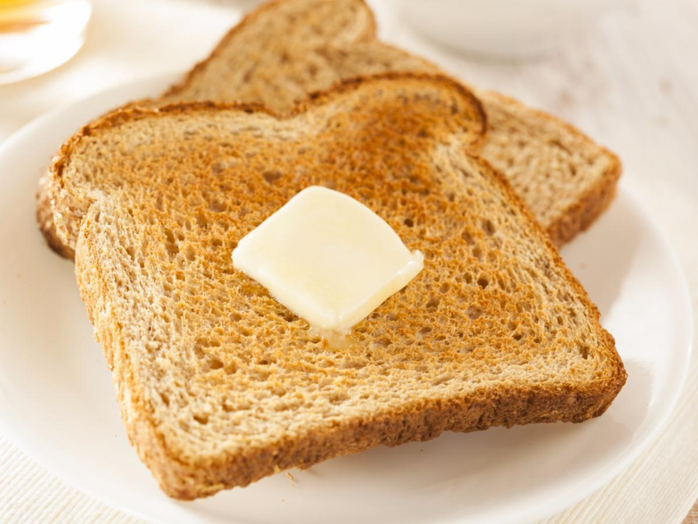

Odin Recipes

Buttered Toast
To celebrate successful pillages of nearby villages, Odin was known to celebrate with a feast of buttered toast in the halls of Valhalla!
Ingredients
- 2 Slices of Bread
- 30g Butter
Instructions
- Start a fire (as big or as small as you wish).
- Brown the bread until firm and crispy, but not burnt.
- Butter (one side) evenly.
Back